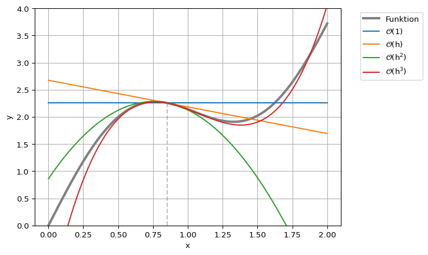
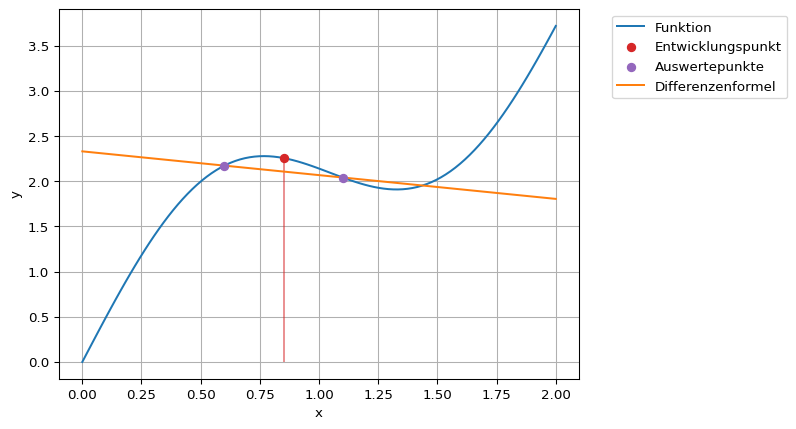

def fkt(x, p=0):
if p==0:
return np.sin(3*x) + 2*x
if p==1:
return 3*np.cos(3*x) + 2
if p==2:
return -9*np.sin(3*x)
if p==3:
return -27*np.cos(3*x)
return None
# Daten für die Visualisierung
x = np.linspace(0, 2, 100)
y = fkt(x, p=0)2 Differentiation
Die numerische Bestimmung von Ableitungen wird hier anhand von zwei Ansätzen demonstriert. Zum Einen als Differenzenquotienten und zum Anderen über das Polynomfitting. Angewendet werden diese Verfahren z.B. beim Suchen von Extrema in Experimental- oder Simulationsdaten, beim Lösen von Differentialgleichungen oder bei Optimierungsverfahren.
Obwohl die analytische Bildung einer Ableitung oft viel einfacher ist als die Integration, ist dies in den oben genannten Fällen nicht direkt möglich. Gesucht ist hierbei immer die Ableitung \(\mathsf{f'(x)}\) einer Funktion \(\mathsf{f(x)}\) oder einer diskreten Punktmenge \(\mathsf{(x_i, y_i)}\) an einer bestimmten Stelle \(\mathsf{x=x_0}\) oder auf einem Intervall.
Die Grundidee bei den hier vorgestellten Differenzenquotienten bzw. Differenzenformeln ist die Annäherung der abzuleitenden Funktion mit einer Taylor-Entwicklung an mehreren Stellen. Damit kann nach der gesuchte Ableitung an der entsprechenden Entwicklungsstelle aufgelöst werden.
2.1 Taylor-Entwicklung
Mittels der Taylor-Entwicklung kann jede beliebig oft stetig differenzierbare Funktion \(\mathsf{f(x)}\) um einem Entwicklungspunkt \(\mathsf{x_0}\) beliebig genau angenähert werden. Die funktionale Abhängigkeit bezieht sich nun auf die Variable \(\mathsf{h}\), welche nur in direkter Umgebung um \(\mathsf{x_0}\) betrachtet wird. Die Taylor-Entwicklung lautet:
\[ \mathsf{f(x_0 + h) = \sum_{i=0}^{\infty}\frac{1}{i!}f^{(i)}(x_0)\cdot h^i} \] \[ \mathsf{ = f(x_0) + f'(x_0)\cdot h + \frac{1}{2} f''(x_0)\cdot h^2 + \frac{1}{6}f'''(x_0)\cdot h^3 + \cdots} \]
Diese Entwicklung kann auch nur bis zu einer vorgegebenen Ordnung betrachtet werden. So nimmt die Entwicklung bis zur Ordnung \(\mathsf{ \mathcal{O}(h^3)}\) folgende Form an:
\[\mathsf{ f(x_0 + h) = f(x_0) + f'(x_0)\cdot h + \frac{1}{2} f''(x_0)\cdot h^2 + \mathcal{O}(h^3)} \]
Hierbei deutet das Landau-Symbol \(\mathsf{\mathcal{O}}\) die Ordnung an, welche die vernachlässigten Terme, hier ab \(\mathsf{h^3}\), als Approximationsfehler zusammenfasst. Die Ordnung gibt an wie schnell bzw. mit welchem funktionalem Zusammenhang der Approximationsfehler gegen Null läuft für \(\mathsf{h \rightarrow 0}\).
Eine graphische Darstellung der ersten Elemente der Reihe verdeutlichen nochmals die Grundidee. Das folgende Beispiel entwickelt die Funktion
\[ \mathsf{f(x) = \sin(3x) + 2x} \]
am Punkt \(\mathsf{x_0=0.85}\).
x0 = 0.85
# Taylor-Elemente
te = []
te.append(0*(x-x0) + fkt(x0, p=0))
te.append((x-x0) * fkt(x0, p=1))
te.append((x-x0)**2 * fkt(x0, p=2) * 1/2)
te.append((x-x0)**3 * fkt(x0, p=3) * 1/6)plt.plot(x, y, color='Grey', lw=3, label="Funktion")
plt.plot(x, te[0], label="$\mathsf{\mathcal{O}(1)}$")
plt.plot(x, te[0] + te[1], label="$\mathsf{\mathcal{O}(h)}$")
plt.plot(x, te[0] + te[1] + te[2], label="$\mathsf{\mathcal{O}(h^2)}$")
plt.plot(x, te[0] + te[1] + te[2] + te[3], label="$\mathsf{\mathcal{O}(h^3)}$")
plt.vlines(x0, ymin=0, ymax=fkt(x0), color='Grey', ls='--', alpha=0.5)
plt.ylim([0,4])
plt.legend(bbox_to_anchor=(1.05, 1.0), loc='upper left')
plt.grid()
plt.xlabel('x')
plt.ylabel('y');<>:2: SyntaxWarning: invalid escape sequence '\m'
<>:3: SyntaxWarning: invalid escape sequence '\m'
<>:4: SyntaxWarning: invalid escape sequence '\m'
<>:5: SyntaxWarning: invalid escape sequence '\m'
<>:2: SyntaxWarning: invalid escape sequence '\m'
<>:3: SyntaxWarning: invalid escape sequence '\m'
<>:4: SyntaxWarning: invalid escape sequence '\m'
<>:5: SyntaxWarning: invalid escape sequence '\m'
/var/folders/p_/ks3trxjx0jd839_g4g0vm4nc0000gn/T/ipykernel_60998/2784086881.py:2: SyntaxWarning: invalid escape sequence '\m'
plt.plot(x, te[0], label="$\mathsf{\mathcal{O}(1)}$")
/var/folders/p_/ks3trxjx0jd839_g4g0vm4nc0000gn/T/ipykernel_60998/2784086881.py:3: SyntaxWarning: invalid escape sequence '\m'
plt.plot(x, te[0] + te[1], label="$\mathsf{\mathcal{O}(h)}$")
/var/folders/p_/ks3trxjx0jd839_g4g0vm4nc0000gn/T/ipykernel_60998/2784086881.py:4: SyntaxWarning: invalid escape sequence '\m'
plt.plot(x, te[0] + te[1] + te[2], label="$\mathsf{\mathcal{O}(h^2)}$")
/var/folders/p_/ks3trxjx0jd839_g4g0vm4nc0000gn/T/ipykernel_60998/2784086881.py:5: SyntaxWarning: invalid escape sequence '\m'
plt.plot(x, te[0] + te[1] + te[2] + te[3], label="$\mathsf{\mathcal{O}(h^3)}$")
2.2 Differenzenformeln
In diesem Abschnitt werden Berechnungsformeln für die Approximation von Ableitungen durch Bildung von Funktionswertdifferenzen vorgestellt. Diese beruhen alle auf der Taylor-Entwicklung und können für beliebige Ableitungen und Ordnungen formuliert werden. Die einfachsten davon werden hier vorgestellt.
2.2.1 Erste Ableitung erster Ordnung
Die einfachste Differenzenformel ergibt sich aus der Taylor-Reihe bis \(\mathsf{\mathcal{O}(h^2)}\). Hier kann die Reihe direkt nach der gesuchten Ableitung an der Stelle \(\mathsf{x_0}\) umgeformt werden.
\[\mathsf{f(x_0 + h) = f(x_0) + f'(x_0)h + \mathcal{O}(h^2)} \] \[\mathsf{\Rightarrow \quad f'(x_0) = \frac{f(x_0 + h) - f(x_0)}{h} + \mathcal{O}(h)} \]
Dies ist die vorwärtsgerichtete Differenzformel erster Ordnung für die erste Ableitung. Erste Ordnung bedeutet hierbei, dass im Grenzwert \(\mathsf{h\rightarrow 0}\) der Approximationsfehler linear mit der Schrittweite abnimmt.
Nach dieser Formel muss die abzuleitende Funktion an zwei Stellen \(\mathsf{f(x_0)}\) und \(\mathsf{f(x_0+h)}\) ausgewertet werden, um die Ableitung numerisch zu bestimmen. Im Grenzwert für eine beliebig kleine Schrittweite, d.h. \(\mathsf{h \rightarrow 0}\), nähert sich dieser Quotient der exakten Ableitung an der Stelle \(\mathsf{x_0}\) an.
Das folgende Beispiel demonstriert die Näherung anhand der Funktion
\[ \mathsf{f(x) = \sin(3x) + 2x} \]
Die Ableitung wird an der Stelle \(\mathsf{x_0 = 0.85}\) angenähert.
def fkt(x):
return np.sin(3*x) + 2*x
# Daten für die Visualisierung
x = np.linspace(0, 2, 100)
y = fkt(x)
# Exakte Lösung bei x=0.85
fp_exakt = 3*np.cos(3*0.85) + 2# Entwicklungspunkt und Schrittweite
h = 0.25
x0 = 0.85
# Auswertung an den beiden Stellen
f0 = fkt(x0)
fh = fkt(x0 + h)
# Bestimmung der Ableitungsnäherung
fp = (fh - f0) / hprint(f"Die numerische Näherung der Ableitung an der Stelle {x0:.2f}:")
print(f"Näherung mit Schrittweite {h:.2f}: {fp:.2f}")
print(f"Exakter Wert: {fp_exakt:.2f}")Die numerische Näherung der Ableitung an der Stelle 0.85:
Näherung mit Schrittweite 0.25: -0.86
Exakter Wert: -0.49Die Methode kann auch graphisch dargestellt werden. Die gesuchte Steigung ist die Steigung der eingezeichneten Geraden.
plt.plot(x, y, label="Funktion")
plt.scatter([x0], [f0], color='C3', label='Entwicklungspunkt', zorder=3)
plt.scatter([x0+h], [fh], color='C4', label='Auswertepunkte', zorder=3)
plt.vlines(x0, ymin=0, ymax=f0, color='C3', alpha=0.5)
plt.plot(x, f0 + fp*(x-x0), label='Differenzenformel')
plt.xlabel('x')
plt.ylabel('y')
plt.grid()
plt.legend(bbox_to_anchor=(1.05, 1.0), loc='upper left');
2.2.2 Erste Ableitung zweiter Ordnung
Mit dem gleichen Ansatz kann auch eine Differenzenformel zweiter Ordnung gefunden werden. Dazu wird die Funktion an den Stellen \(\mathsf{x_0-h}\) und \(\mathsf{x_0+h}\) mit der Taylor-Reihe bis zur Ordnung \(\mathsf{\mathcal{O}(h^3)}\) approximiert.
\[\mathsf{f(x_0+h) = f(x_0) + f'(x_0)\cdot h + \frac{1}{2}f''(x_0)\cdot h^2 + \mathcal{O}(h^3)} \] \[\mathsf{f(x_0-h) = f(x_0) - f'(x_0)\cdot h + \frac{1}{2}f''(x_0)\cdot h^2 + \mathcal{O}(h^3)} \]
Die Differenz dieser beiden Gleichungen führt zu
\[\mathsf{f(x_0+h) - f(x_0-h) = 2f'(x_0)\cdot h + \mathcal{O}(h^3)} \]
Und die Umformung nach der gesuchten Ableitung an der Stelle \(\mathsf{x_0}\) ergibt
\[\mathsf{f'(x_0) = \frac{f(x_0+h) - f(x_0-h)}{2h} + \mathcal{O}(h^2)} \]
Dies ist die zentrale Differenzenformel für die erste Ableitung zweiter Ordnung. Wie bei der vorwärtsgerichteten Formel muss hier die Funktion an zwei Stellen ausgewertet werden, jedoch nicht mehr am Entwicklungspunkt selbst. Durch diese Symmetrie bzgl. des Entwicklungspunkts ergibt sich ein besseres, hier quadratisches, Konvergenzverhalten.
# Auswertung an den beiden Stellen
fnh = fkt(x0 - h)
fph = fkt(x0 + h)
# Bestimmung der Ableitungsnäherung
fp = (fph - fnh) / (2*h)print(f"Die numerische Näherung der Ableitung an der Stelle {x0:.2f}:")
print(f"Näherung mit Schrittweite {h:.2f}: {fp:.2f}")
print(f"Exakter Wert: {fp_exakt:.2f}")Die numerische Näherung der Ableitung an der Stelle 0.85:
Näherung mit Schrittweite 0.25: -0.26
Exakter Wert: -0.49Die Methode kann auch graphisch dargestellt werden. Die gesuchte Steigung ist die Steigung der eingezeichneten Geraden.
plt.plot(x, y, label="Funktion")
plt.scatter([x0], [f0], color='C3', label='Entwicklungspunkt', zorder=3)
plt.scatter([x0-h, x0+h], [fnh, fph], color='C4', label='Auswertepunkte', zorder=3)
plt.vlines(x0, ymin=0, ymax=f0, color='C3', alpha=0.5)
plt.plot(x, fnh + fp*(x-x0+h), label='Differenzenformel')
plt.xlabel('x')
plt.ylabel('y')
plt.grid()
plt.legend(bbox_to_anchor=(1.05, 1.0), loc='upper left');
2.3 Zweite Ableitung zweiter Ordnung
Mit dem gleichen Schema wie oben, kann auch die Differenzenformel für die zweite Ableitung bestimmt werden. Diese lautet
\[\mathsf{f''(x_0) = \frac{f(x_0-h) - 2f(x_0) + f(x_0+h)}{h^2} + \mathcal{O}(h^2)}\]
2.4 Fehlerbetrachtung
In diesem Abschnitt werden die Approximationsfehler, d.h. Fehler aus der Differenzenformeln, und Rundungsfehler, d.h. Fehler durch die endliche Genauigkeit der digitalen Darstellung von Zahlen, betrachtet.
2.4.1 Approximationsfehler
Die Ordnung des Verfahrens kann durch die Betrachtung des Fehlers, hier zum bekannten exakten Wert, bestimmt werden. Dazu wird die Schrittweite kontinuierlich verkleinert.
Code
def fkt(x):
return np.sin(3*x) + 2*x
# Daten für die Visualisierung
x = np.linspace(0, 2, 100)
y = fkt(x)
# Exakte Lösung bei x=1
fp_exakt = 3*np.cos(3*0.85) + 2Code
x0 = 0.85
hs = []
fpfs = []
fpcs = []
h0 = 1
for i in range(18):
h = h0 / 2**i
f0 = fkt(x0)
fnh = fkt(x0 - h)
fph = fkt(x0 + h)
fpf = (fph - f0) / h
fpc = (fph - fnh) / (2*h)
hs.append(h)
fpfs.append(fpf)
fpcs.append(fpc)Code
plt.plot(hs, np.abs(fpfs - fp_exakt), label='vorwärts')
plt.plot(hs, np.abs(fpcs - fp_exakt), label='zentral')
plt.plot([1e-5, 1e-1], [1e-5, 1e-1], '--', color='grey', label='Hilfslinien')
plt.plot([1e-5, 1e-1], [1e-10, 1e-2], '--', color='grey')
plt.xlabel('Schrittweite h')
plt.ylabel('Fehler')
plt.xscale('log')
plt.yscale('log')
plt.legend()
plt.grid();
In der logiarithmischen Darstellung beider Achsen werden Potenzfunktionen zu Graden mit dem Potenzgrad als Steigung. Das bedeutet, dass der Fehler im obigen Plot sich wie eine Potenzfunktion mit dem Grad eins bzw. zwei verhält. Die eingezeichneten Hilfslinien haben eine Steigung von eins bzw. zwei. Dies entspricht auch der Ordnung \(\mathsf{\mathcal{O}(h)}\) bzw. \(\mathsf{\mathcal{O}(h^2)}\) aus der Differenzenformel.
2.4.2 Rundungsfehler
Wird nun die Schrittweiter noch weiter verkleinert, wirkt sich die Genauigkeit der Darstellung von Zahlen bzw. Rundungsfehler auf die Approximation aus.
Code
x0 = 0.85
hs = []
fpfs = []
fpcs = []
h0 = 1
for i in range(35):
h = h0 / 2**i
f0 = fkt(x0)
fnh = fkt(x0 - h)
fph = fkt(x0 + h)
fpf = (fph - f0) / h
fpc = (fph - fnh) / (2*h)
hs.append(h)
fpfs.append(fpf)
fpcs.append(fpc)Code
plt.plot(hs, np.abs(fpfs - fp_exakt), label='vorwärts')
plt.plot(hs, np.abs(fpcs - fp_exakt), label='zentral')
plt.plot([1e-5, 1e-1], [1e-5, 1e-1], '--', color='grey', label='Hilfslinien')
plt.plot([1e-5, 1e-1], [1e-10, 1e-2], '--', color='grey')
plt.xlabel('Schrittweite h')
plt.ylabel('Fehler')
plt.xscale('log')
plt.yscale('log')
plt.legend()
plt.grid();
Wie bereits vorgestellt, können 64-Bit-Zahlen nur mit einer Genauigkeit von etwa \(\mathsf{\epsilon\approx10^{-16}}\) dargestellt werden. Das bedeutet, dass z.B. die Differenz von zwei Zahlen nicht genauer als \(\mathsf{\epsilon}\) berechnet werden kann. Dies ist der sogenannte Rundungsfehler.
Im konkreten Fall der Vorwärtsdifferenzenformel bedeutet dies:
\[ \mathsf{f'(x_0) = \frac{f(x_0 + h) - f(x_0)}{h} + \mathcal{O}(h)} \] \[\mathsf{\overset{Rundungsfehler}{\Rightarrow} \frac{f(x_0 + h) - f(x_0) + \mathcal{O}(\epsilon)}{h} + \mathcal{O}(h)} \] \[ \mathsf{= \frac{f(x_0 + h) - f(x_0)}{h} + \mathcal{O}\left(\frac{\epsilon}{h}\right) + \mathcal{O}(h)} \]
Damit macht eine Verkleinerung von \(\mathsf{h}\) nur Sinn, solange der Rundungsfehler klein gegenüber \(\mathsf{h}\) ist. Genauer:
\[\mathsf{\frac{\epsilon}{h} \le h }\] \[\mathsf{\Rightarrow \quad h \ge \sqrt{\epsilon}} \]
Mit \(\mathsf{\epsilon \approx 10^{-16}}\) ist für diese Differenzenformel ein \(\mathsf{h}\) nur bis etwa \(\mathsf{10^{-8}}\) angemessen.